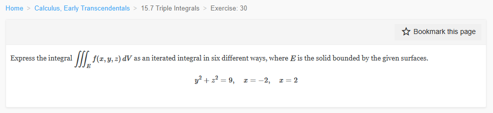
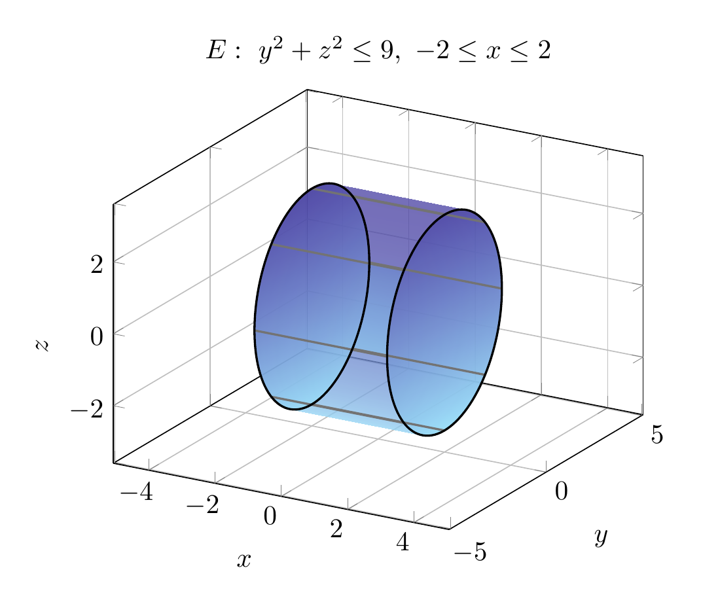

Please solve the problem in the following image.
(Image `20260928_145503_654762_utc_0800_0.png`. Alt text: Image: human_20260928_145503_654762_utc_0800)

20260928_145503_654762_utc_0800_0.png
End of problem
Answer
## 1. The solid
The bounding surfaces are the circular cylinder
\[ y^2+z^2=9 \]
(radius \(3\), axis the \(x\)-axis) together with the planes \(x=-2\) and \(x=2\). Hence
\[
E=\{(x,y,z):-2\le x\le 2,\ y^2+z^2\le 9\}.
\]
As a check, the volume of this right circular cylinder is
\[
\pi(3^2)(4)=36\pi.
\]
---
\documentclass[border=10pt]{standalone}
\usepackage{pgfplots}
\pgfplotsset{compat=1.18}
\begin{document}
\begin{tikzpicture}
\begin{axis}[
view={30}{20},
axis equal,
xmin=-2.6, xmax=2.6,
ymin=-3.6, ymax=3.6,
zmin=-3.6, zmax=3.6,
xlabel={$x$}, ylabel={$y$}, zlabel={$z$},
grid=major,
colormap={cyl}{color=(cyan!40) color=(blue!80)},
title={$E:\ y^2+z^2\leq 9,\ -2\leq x\leq 2$},
]
% lateral surface, split into upper and lower halves
\addplot3[surf, domain=-2:2, y domain=-3:3, samples=11, samples y=41,
opacity=0.78, shader=interp] {sqrt(9-y^2)};
\addplot3[surf, domain=-2:2, y domain=-3:3, samples=11, samples y=41,
opacity=0.78, shader=interp] {-sqrt(9-y^2)};
% filled end disks at x = -2 and x = 2
\addplot3[surf, domain=0:360, y domain=0:3, samples=41, samples y=11,
trig format plots=deg, opacity=0.78, shader=interp]
({-2}, {y*cos(x)}, {y*sin(x)});
\addplot3[surf, domain=0:360, y domain=0:3, samples=41, samples y=11,
trig format plots=deg, opacity=0.78, shader=interp]
({2}, {y*cos(x)}, {y*sin(x)});
% generators parallel to the x-axis
\pgfplotsforeachungrouped \a in {0,45,...,315}{
\addplot3[domain=-2:2, samples=2, black!55, thick]
({x}, {3*cos(\a)}, {3*sin(\a)});
}
% boundary circles
\addplot3[domain=0:360, samples=120, trig format plots=deg, thick, black]
({-2}, {3*cos(x)}, {3*sin(x)});
\addplot3[domain=0:360, samples=120, trig format plots=deg, thick, black]
({2}, {3*cos(x)}, {3*sin(x)});
\end{axis}
\end{tikzpicture}
\end{document}

pgfplots_0.png
---
## 2. The \(yz\)-cross-section
For each fixed \(x\in[-2,2]\), the cross-section in the \(yz\)-plane is the disk
\[
D:\ y^2+z^2\le 9.
\]
Thus:
- for fixed \(y\), \(z\) runs from \(-\sqrt{9-y^2}\) to \(\sqrt{9-y^2}\);
- for fixed \(z\), \(y\) runs from \(-\sqrt{9-z^2}\) to \(\sqrt{9-z^2}\);
- \(y\) and \(z\) each lie in \([-3,3]\).
The \(x\)-coordinate is independent of \(y,z\) and satisfies \(-2\le x\le 2\). These facts determine the inner limits in the six orders below.
---
pgfplots_1.png
---
## 3. The six iterated integrals
The order of integration is the order of the differentials from inside to outside.
**(a) \(dz\,dy\,dx\)**
\[
\int_{-2}^{2}\int_{-3}^{3}\int_{-\sqrt{9-y^{2}}}^{\sqrt{9-y^{2}}} f(x,y,z)\,dz\,dy\,dx
\]
**(b) \(dy\,dz\,dx\)**
\[
\int_{-2}^{2}\int_{-3}^{3}\int_{-\sqrt{9-z^{2}}}^{\sqrt{9-z^{2}}} f(x,y,z)\,dy\,dz\,dx
\]
**(c) \(dz\,dx\,dy\)**
\[
\int_{-3}^{3}\int_{-2}^{2}\int_{-\sqrt{9-y^{2}}}^{\sqrt{9-y^{2}}} f(x,y,z)\,dz\,dx\,dy
\]
**(d) \(dy\,dx\,dz\)**
\[
\int_{-3}^{3}\int_{-2}^{2}\int_{-\sqrt{9-z^{2}}}^{\sqrt{9-z^{2}}} f(x,y,z)\,dy\,dx\,dz
\]
**(e) \(dx\,dy\,dz\)**
\[
\int_{-3}^{3}\int_{-\sqrt{9-z^{2}}}^{\sqrt{9-z^{2}}}\int_{-2}^{2} f(x,y,z)\,dx\,dy\,dz
\]
**(f) \(dx\,dz\,dy\)**
\[
\int_{-3}^{3}\int_{-\sqrt{9-y^{2}}}^{\sqrt{9-y^{2}}}\int_{-2}^{2} f(x,y,z)\,dx\,dz\,dy
\]
Each of these reduces to the volume \(36\pi\) when \(f\equiv1\), so the limits are consistent.
---
## Final answer
The six iterated integrals are
\[
\boxed{
\begin{aligned}
&\int_{-2}^{2}\int_{-3}^{3}\int_{-\sqrt{9-y^{2}}}^{\sqrt{9-y^{2}}} f(x,y,z)\,dz\,dy\,dx, \\[2pt]
&\int_{-2}^{2}\int_{-3}^{3}\int_{-\sqrt{9-z^{2}}}^{\sqrt{9-z^{2}}} f(x,y,z)\,dy\,dz\,dx, \\[2pt]
&\int_{-3}^{3}\int_{-2}^{2}\int_{-\sqrt{9-y^{2}}}^{\sqrt{9-y^{2}}} f(x,y,z)\,dz\,dx\,dy, \\[2pt]
&\int_{-3}^{3}\int_{-2}^{2}\int_{-\sqrt{9-z^{2}}}^{\sqrt{9-z^{2}}} f(x,y,z)\,dy\,dx\,dz, \\[2pt]
&\int_{-3}^{3}\int_{-\sqrt{9-z^{2}}}^{\sqrt{9-z^{2}}}\int_{-2}^{2} f(x,y,z)\,dx\,dy\,dz, \\[2pt]
&\int_{-3}^{3}\int_{-\sqrt{9-y^{2}}}^{\sqrt{9-y^{2}}}\int_{-2}^{2} f(x,y,z)\,dx\,dz\,dy.
\end{aligned}
}
\]
In every case, taking \(f\equiv1\) gives \(36\pi\), the volume of the cylinder.